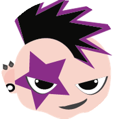

技术书
上千页
不用读
压成 AI 技能
| 00| 25| 50| 75| 99
#1今日榜首
Python

virgiliojr94/book-to-skill
技术书变技能
把技术书的 PDF，变成 AI 编程助手能调用的技能
12.7K★
今日 +1428
PDF→技能
随查随用
知识激活
几百页厚书不用啃
读
→
用
知识从读变成用
#2技能框架
Shell

obra/superpowers
经验变技能
把开发经验固化成能复用的技能，让 AI 按方法论干活
26.3万★
今日 +686
复用方法论
经验固化
AI 按方法干活

1jehuang/jcode
省内存 AI 终端
13.4K★
今日 +652
Rust 编写
内存占同类零头
老电脑带得动
#4开源语音 AI
Python

microsoft/VibeVoice
开源语音 AI
语音转文字能处理六十分钟长音频，浏览器里就能试
51.2K★
今日 +332
60 分钟长音频
浏览器试玩
免部署

grokability/snipe-it
管公司 IT 资产
14.4万★
稳跑 13 年
免费开源
企业级
软件授权管理
把书变成技能这种玩法
先试哪个
你会选哪一个
book-to-skill
superpowers
jcode
VibeVoice
关注我 · 每天聊几个 GitHub 新项目